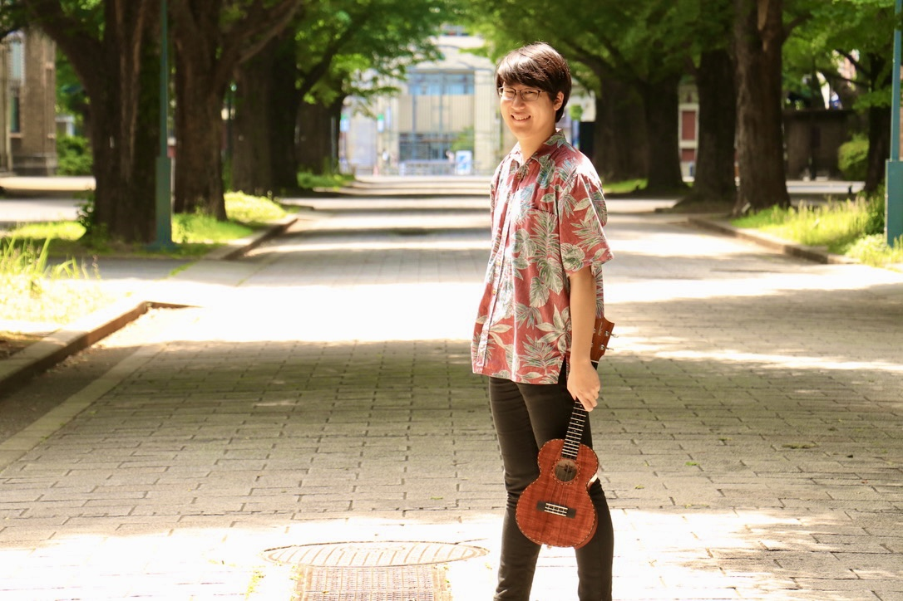

経歴 / Biography
早川 健太 | Kenta Hayakawa
東京大学大学院工学系研究科精密機械工学専攻修士課程修士1年。東京大学工学部精密工学科卒業。学士(工学)。
高校時代に謎解き制作に興味を持ち、2017年9月に開智高校謎解き制作集団《K-Index》を設立して以降、
現在に至るまで様々な謎解きイベントの制作や運営、テレビ番組・雑誌などへの問題提供などを行っている。
一方、中学時代からウクレレ演奏を趣味としており、大学入学時に自身でサークルを立ち上げることを決意。
2020年4月に東京大学ウクレレサークル ウクレレ・ヒキナを設立し、2年間代表を務める。
コロナ禍の中サークルの規模拡大に尽力し、最盛期には80人以上が所属するまでに成長させた。
現在は農業分野における数理最適化の研究に従事する傍ら、
謎解きクリエイターおよびウクレレプレーヤーとしてイベントの制作・運営、メディア出演など幅広く活動している。

学歴
職歴
2021年2月-現在 株式会社baton
謎解き制作やイベント運営を行う
謎解き制作やイベント運営を行う
2023年12月-2024年1月 東京大学 教養学部 TA「現代工学基礎Ⅱ」
TAとして講義で扱う問題の設定や学生の実習の補助を行う
TAとして講義で扱う問題の設定や学生の実習の補助を行う
2019年12月-2021年3月 株式会社ナガセ
東進の大学入試答案の採点や添削業務を行う
東進の大学入試答案の採点や添削業務を行う
2019年4月-2020年3月 株式会社合格王システムズ
家庭教師として中学生や高校生への指導を行う
家庭教師として中学生や高校生への指導を行う
受賞
- 2023年3月 日本設計工学会武藤栄次賞優秀学生賞
- 2022年12月 エコデザイン・プロダクツ&サービス2022シンポジウム(EcoDePS2022) ベストポスター賞